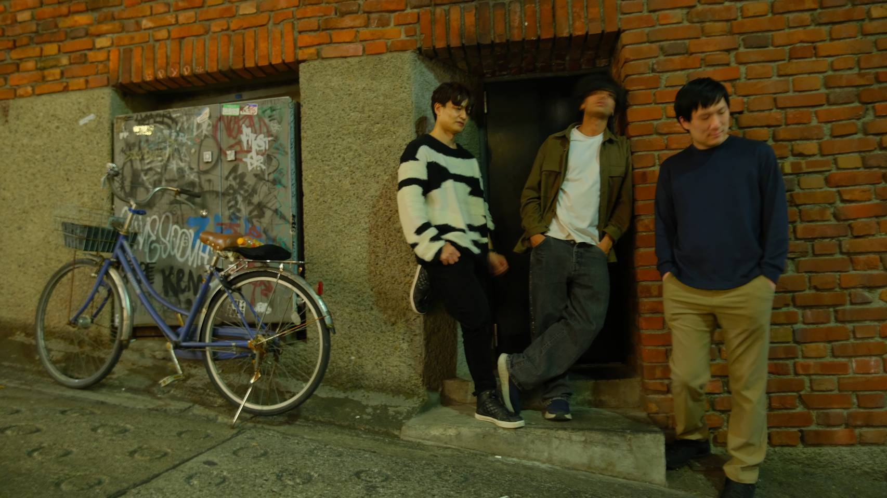

The New Days are a three-piece rock band, formed in Tokyo in 2024.
Shu on guitar and vocals, Roger on drums, Anjee on bass. Rock, blues, punk, reggae, grunge — whatever each of them grew up on tends to end up in the songs.
The songs are written in English, but they aren't about anywhere far away. A teacher who took your side on your first day at a new school. One summer that was never going to last. The place you used to hide when there was no one to tell. Every song on this site has a Japanese translation with it.
Six singles since “Backpack in the Sunset” in 2024, and shows around Tokyo — Akasaka, Shibuya, Kichijoji.
The New Days は、2024年に東京で結成された3ピースのロックバンド。
Shu（Gt/Vo）、Roger（Dr）、Anjee（Ba）の3人。ロック、ブルース、パンク、レゲエ、グランジ。それぞれが通ってきたものが、そのまま曲に出る。
歌詞は全部英語で書いている。ただ、歌っているのは遠い国の話ではない。転校してきた日に味方でいてくれた人のこと。続かないと分かっていたひと夏のこと。誰にも言えずに隠れていた場所のこと。このサイトには、全曲に日本語訳を置いてある。
2024年の「Backpack in the Sunset」以降、これまでに6曲を配信でリリース。赤坂、渋谷、吉祥寺を中心にライブを続けている。
Bookings, press, or anything else — the fastest way to reach us is a DM on Instagram. We read them.
ライブのお誘い、取材、その他のご連絡は、Instagram のDMが一番早く届きます。日本語で大丈夫です。